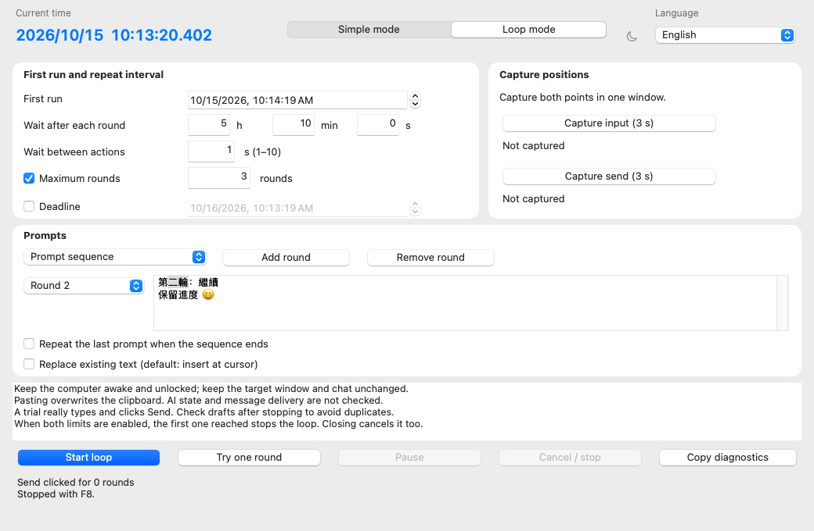

Set up a bounded loop
- Keep the computer awake and unlocked. Keep the target app, chat and layout unchanged.
- Choose Loop mode, the first execution time, the wait after each round and the delay between actions.
- Choose the same prompt each round or a sequence. A sequence can stop at its end or repeat its final prompt.
- Enable a maximum round count, a deadline, or both. At least one is required.
- Capture input and Send positions in the same window. Choose insert-at-caret or replace-existing-text.
- Review the confirmation and try one round on a harmless target. The trial really pastes and clicks Send.
Timing and stopping
Click the input → wait → paste → wait → click Send → wait the configured interval. macOS first requests target activation and waits one configured step delay before validating and clicking. A five-hour interval begins after the round completes; it is not a provider reset timer.
Pause is resumable only between rounds. During a round it stops execution. The deadline applies while paused. Cancel, F8 (Fn+F8 on some Macs) and closing the app stop remaining steps. Completed input cannot be undone; inspect drafts before restarting.
Targets, clipboard and permissions
Loop mode overwrites the clipboard and does not restore it. Mac capture uses Accessibility hit-testing and retains the original window identity; it supports regular accessible app windows. Window checks cannot identify changed chats or confirm message delivery. If a Mac trial fails, Copy diagnostics reports build, OS, app identity and execution stages without prompt text or window titles.
Languages and appearance
Traditional Chinese, English, Japanese, Korean and German. Chinese system locales, including Simplified Chinese, select the Traditional Chinese interface; Japanese, Korean and German select their matching language; all others select English. You can switch languages in either mode.
Yes. Startup follows the system light or dark app appearance. The sun/moon button changes both modes for the current session. Restarting reads the system preference again.
Only the untouched initial continuation prompt follows language changes: 繼續, Continue, 続けて, 계속 or Weiter. Once you edit it, your text is preserved. Prompts already captured by a running schedule stay unchanged.
Actual interface renders
Automated renders of the accepted v1.2.0 interface. Screenshots demonstrate layout; they do not demonstrate delivery to another app.

